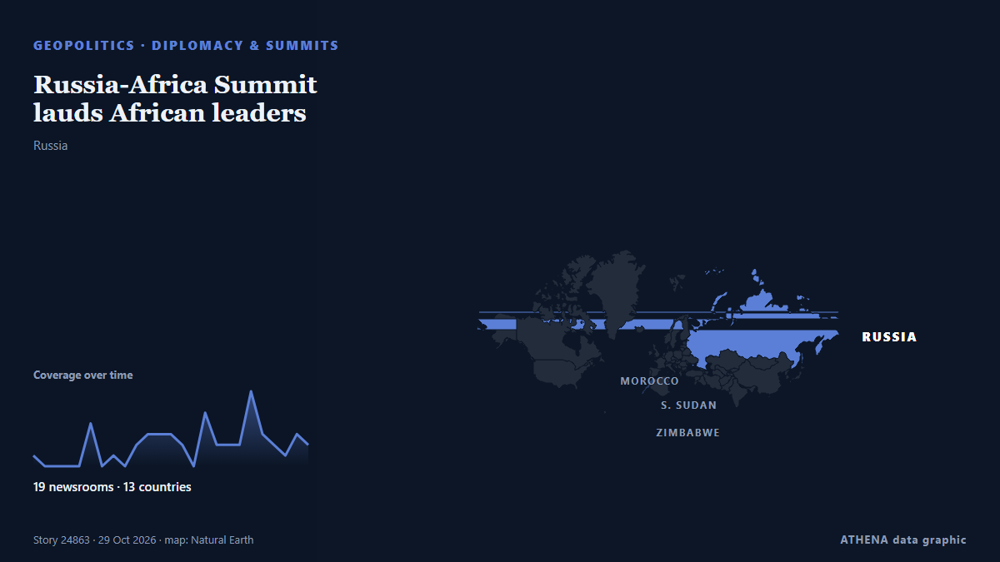

Russia-Africa Summit lauds African leaders

Andrey Maslov noted that Russia had partner countries with whom quite diverse mechanisms of interaction are in place, along with sector-specific tracks. από TASS (English)
Αναφέρθηκε ανεξάρτητα από 19 μέσα σε 13 χώρες από τις 23 Οκτ, πρώτο από το TASS (English)· η κάλυψη εξασθενεί. Το ATHENA εκτιμά τον κίνδυνο χαμηλό (1.7/10), κυρίως λόγω της σοβαρότητας της βλάβης που περιγράφεται και της γεωγραφικής και τομεακής εμβέλειάς του. Η βεβαιότητα είναι 91% (υψηλή), καθώς το επιβεβαιώνουν 19 ανεξάρτητα μέσα με μέση αξιοπιστία πηγών 74%.
Γιατί έχει σημασία: Οι εξελίξεις στην ασφάλεια και τη διπλωματία μπορούν να μετατοπίσουν συμμαχίες, εμπόριο και αγορές πολύ πέρα από τις χώρες που εμπλέκονται.
Τι άλλαξε: 8 νέες αναφορές από 5 μέσα στο 24ωρο έως 29 Οκτ.
Πρώτη διατύπωση: President expected for Russia-Africa Summit
Οι τίτλοι των ειδήσεων παρουσιάζονται στα αγγλικά, όπως δημοσιεύτηκαν.
Με μια ματιά
Επιλέγεται, βαθμολογείται και γράφεται από τη δημοσιευμένη μεθοδολογία του ATHENA. Κανένας συντάκτης δεν παρεμβαίνει σε μεμονωμένα γεγονότα. Πώς παράγεται ›
| 23 Oct 13:34 UTC | 1 |
|---|---|
| 23 Oct 19:34 UTC | 0 |
| 24 Oct 01:34 UTC | 0 |
| 24 Oct 07:34 UTC | 0 |
| 24 Oct 13:34 UTC | 0 |
| 24 Oct 19:34 UTC | 4 |
| 25 Oct 01:34 UTC | 0 |
| 25 Oct 07:34 UTC | 1 |
| 25 Oct 13:34 UTC | 0 |
| 25 Oct 19:34 UTC | 2 |
| 26 Oct 01:34 UTC | 3 |
| 26 Oct 07:34 UTC | 3 |
| 26 Oct 13:34 UTC | 3 |
| 26 Oct 19:34 UTC | 2 |
| 27 Oct 01:34 UTC | 0 |
| 27 Oct 07:34 UTC | 5 |
| 27 Oct 13:34 UTC | 2 |
| 27 Oct 19:34 UTC | 2 |
| 28 Oct 01:34 UTC | 2 |
| 28 Oct 07:34 UTC | 7 |
| 28 Oct 13:34 UTC | 3 |
| 28 Oct 19:34 UTC | 2 |
| 29 Oct 01:34 UTC | 1 |
| 29 Oct 07:34 UTC | 3 |
| 29 Oct 13:34 UTC | 2 |
| 23 Oct 13:38 UTC | 0.0 |
|---|---|
| 29 Oct 09:09 UTC | 1.9 |
| 29 Oct 17:03 UTC | 1.7 |
Γιατί αυτοί οι αριθμοί
Σημασία
Κίνδυνος
Βεβαιότητα
Η κάλυψη — ποιος το ανέφερε και πότε
ο τίτλος όπως δημοσιεύτηκε · ανοίγει το πρωτότυπο- TASS (English) · Ρωσία · RussiaRussia-Africa summit establishes regular cooperation with African nations — expert
- The Herald · Ζιμπάμπουε · ZimbabweNEW: President Mnangagwa leaves for Russia-Africa Summit
- The Herald · Ζιμπάμπουε · ZimbabweNEW: President Mnangagwa leaves for Russia-Africa Summit
- TASS (English) · Ρωσία · RussiaLeader of Central African Republic to attend 3rd Russia-Africa summit — embassy
- The Herald · Ζιμπάμπουε · ZimbabwePresident expected for Russia-Africa Summit
- The Herald · Ζιμπάμπουε · ZimbabwePresident arrives in Russia
- The Herald · Ζιμπάμπουε · ZimbabweMoscow Talks to Drive Jobs, Growth. . . as Zimbabwe pushes for concrete economic gains at Summit
- The Herald · Ζιμπάμπουε · ZimbabweZim guns for economic gains at top summit . . . President, delegation eye high-level engagements
- NewZimbabwe · Ζιμπάμπουε · ZimbabweZimbabwe chases trade and investment deals at Russia-Africa Summit
- AllAfrica · AFRZimbabwe: Zimbabwe Chases Trade and Investment Deals At Russia-Africa Summit
- The Herald · Ζιμπάμπουε · ZimbabweAfrican journalists draw cultural lessons from Russia’s historic landmarks
- The Herald · Ζιμπάμπουε · ZimbabweAfrican journalists draw cultural lessons from Russia’s historic landmarks
- Eye Radio · Νότιο Σουδάν · South SudanKiir travels to Moscow for Russia-Africa Summit
- Radio Tamazuj · Νότιο Σουδάν · South SudanKiir heads to Moscow for Russia-Africa summit
- Sudans Post · Νότιο Σουδάν · South SudanKiir travels to Moscow for Russia-Africa summit
- TASS (English) · Ρωσία · RussiaLeaders from 22 of 48 countries to attend Russia-Africa summit, says Kremlin aide
- Africanews (English) · AFRMoscow hosts African leaders for Russia-Africa Summit and Energy Forum
- MyJoyOnline · Γκάνα · GhanaMahama arrives in Moscow for Third Russia-Africa Summit and bilateral talks with Putin
- Meduza (English) · Ρωσία · RussiaMobile internet to be restricted in central Moscow October 27-29 during Russia-Africa and gas exporters’ summits
- APA (English) · Αζερμπαϊτζάν · AzerbaijanMoscow restricts mobile internet access ahead of Russia-Africa Summit
- Africanews (English) · AFRMoscow prepares to host African leaders for Russia-Africa Summit
- TASS (English) · Ρωσία · RussiaRussia-Africa summit to strengthen strategic cooperation with continent — Lavrov
- The Herald · Ζιμπάμπουε · ZimbabweEXPLAINER: The ongoing Russia-Africa Summit 2026: All you need to know about this year’s indaba
- Anadolu Agency (English) · Τουρκία · TurkeySudan’s Burhan to attend Russia-Africa summit in Moscow
- Daily News · Τανζανία · TanzaniaPM flies to Moscow for Oct 28’s Russia-Africa Summit
- Radio Tamazuj · Νότιο Σουδάν · South SudanSudan’s Burhan heads to Moscow for Russia-Africa summit
- Hespress English · Μαρόκο · MoroccoPutin says Russia-Africa summits have laid foundation for stronger ties with continent
- TASS (English) · Ρωσία · RussiaVladimir Putin starts work at Russia-Africa Summit
- The Herald · Ζιμπάμπουε · ZimbabweEnergy, AI, food security top Russia-Africa Summit agenda
- Anadolu Agency (English) · Τουρκία · TurkeyEXPLAINER – What to expect from Russia-Africa Summit in Moscow
- Capital FM Kenya · Κένυα · KenyaRuto Arrives in Moscow for Russia-Africa Summit to Strengthen Economic Ties
- New Era (Namibia) · Ναμίμπια · NamibiaRussia-Africa trade exceeds US$27b
- AllAfrica · AFRAfrica: PM in Moscow to Attend 3rd Russia-Africa Summit
- Al Jazeera English · Κατάρ · QatarRussia-Africa Summit: What is on the agenda, and why does it matter?
- Hespress English · Μαρόκο · Morocco3rd Russia-Africa Summit: Morocco’s FM Takes Part in African Foreign Ministers Meeting
- TASS (English) · Ρωσία · RussiaAction plan to be adopted following Russia-Africa summit — Putin
- Daily News · Τανζανία · TanzaniaDr Nchemba jets in Moscow as 3rd Russia-Africa Summit begins today
- Hespress English · Μαρόκο · MoroccoMansouri arrives in Moscow to represent King at Russia-Africa summit
- Hespress English · Μαρόκο · MoroccoRussia-Africa summit opens in Moscow: 33 planned agreements, $27 billion in trade and Morocco's participation
- AllAfrica · AFRAfrica: PM in Moscow to Attend 3rd Russia-Africa Summit [update 1]